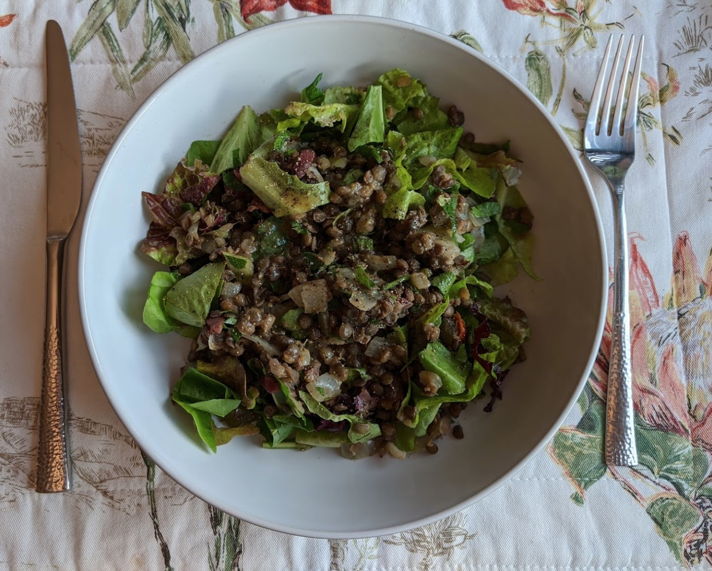

Greek lentil salad
Mmmmm...

Ingredients
- 200g dry lentils
- 1 onion, chopped
- 2 cloves garlic, mashed
- 3 cups lightly packed baby spinach leaves (or lettuce)
- ⅓ cup baby tomatoes
- ⅓ cup Kalamata olives, pitted and chopped
- ⅓ cup fresh basil or parsley, chopped
- ¼ cup olive oil
- 2 Tbsp red/white wine vinegar
- 1 Tbsp peanut butter
- ½ tsp dried oregano
- ½ tsp fine sea salt
- Cook the lentils according to packet instructions, usually involves boiling them for 30-40
minutes.
- Heat olive oil over medium heat, then add onions and garlic and cook until slightly softened.
- In a mixing bowl, combine spinach, tomatoes, olives, basil/parsley and mix.
- Once cooked, add the lentils, onion and garlic and mix.
- Combine olive oil, vinegar, peanut butter, oregano, salt and pepper, pour over the salad and
mix.
Serves 4.
Inspired by this recipe.